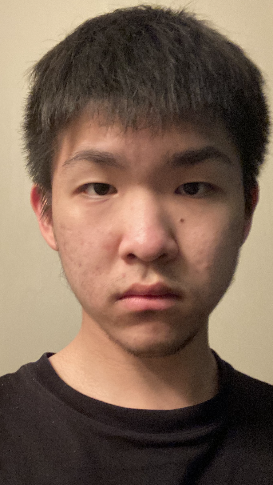

|  | Jacky ShenFirst year student, The University of Toronto I am a first year student who studies at the University of Toronto with admission to Rotman Commerce. I am intended to take a double major of Math/Computer Science. |
| Apr. 2022 - Present | Tiger Sugar Bubble Tea Crew Member, Vancouver, BC | Work in both front desk and back kitchen. My duties include taking customer orders, making bubble tea, and providing customer service. |
| Aug. 2021 - Feb. 2022 | McDonald's Crew Member, Vancouver, BC | Work in McDonald’s team and mainly back kitchen. Cover all areas of the back kitchen including grilling, frying, baking, and tables |
| Nov. 2020 - May. 2021 | Junior Achievement BC Company Program | Co-found a start-up centered on selling seed paper postcards that can bloom into flowers when planted and serve as its VP of Human Resources. My duties include organizing and leading meetings, liaising between executives and members, and coordinating with suppliers. |
| Sep. 2019 - Nov.2019 | Election Campaign Assistant, Burnaby, BC | Assist Burnaby South Conservative Party Candidate during the election by cold calling and door-knocking Burnaby citizens to look for potential voters. |